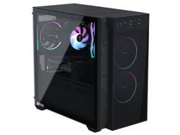
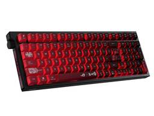
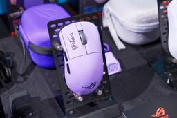
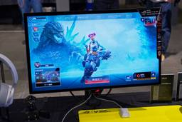
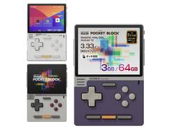
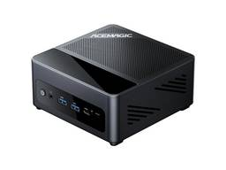
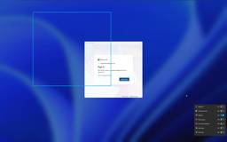
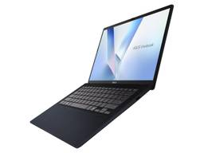

PC Watch
https://pc.watch.impress.co.jp
PC/テクノロジーの最新情報、レポート等でPC業界を先取り
フィード

インテル50周年記念のゲーミングPC、ツクモが50万円で発売
PC Watch
4月28日に設立50周年を迎えたインテル株式会社を記念し、ケースに特別デザインを施した数量限定のゲーミングPCがツクモネットショップで販売されている。ヤマダデンキは11月20日、TSUKUMOブランドのゲーミングPCシリーズ「G-GEAR」から、インテル株式会社設立50周年を記念したデザインのデスクトップPC「GE7J-M261BH/INTEL50」を発売した。直販価格は50万円。
4時間前

クーラーもビデオカードもAORUS、GIGABYTEのRTX 5060 Ti機
PC Watch
ゲーミング向けパーツブランド「AORUS」の製品で主要パーツをそろえた完成品のゲーミングPCが登場した。GIGABYTEが11月20日に発売した、Ryzen 5 9500FとGeForce RTX 5060 Tiを搭載するデスクトップPC「AORUS PRIME 3 AP3A5N6T-5103P」だ。実売予想価格は41万1,000円前後。
8時間前

49gマウスも、ROGに「Phantom Blade Zero」コラボ3製品
PC Watch
ASUSは11月20日、アクションゲーム「Phantom Blade Zero」とのコラボモデルとしてゲーミングデバイス3製品の予約を開始した。
8時間前

VALORANT王者Demon1と共同開発したゲーミングマウス。47gの軽量設計
PC Watch
ASUSは、プロゲーマーのDemon1選手と共同開発した軽量ワイヤレスゲーミングマウス「ROG Harpe II Ace Mini」および同氏のシグネチャーモデル「ROG Harpe II Ace Mini Demon1 Edition」を12月3日に発売する。予約は11月27日より受付開始し、価格はいずれも2万5,020円。
9時間前

【今すぐ読みたい！人気記事】機種変更時の「LINE」移行手順を解説、旧機種のトーク履歴も移すには…… - PC Watch
PC Watch
円安とメモリの価格高騰でスマートフォンも値上がりが続き、新機種への買い替えが非常に難しくなっている昨今。だがOSやセキュリティのアップデートに限界がある以上、いずれ機種変更しなくてはいけないのがスマートフォンの宿命だ。
11時間前

【今すぐ読みたい！人気記事】メモリ8GBで仕事なんて無理……そう思っていた時期が僕にもありました - PC Watch
PC Watch
最近、PCの値上げが止まらない。具体的にはメモリやストレージの価格がまったく下がる気配がない。このあたりの状況については、これまでに弊誌などで何度もレポートされているが、現在順調に動いているPCが、ある日突然動かなくなったとき、我々はどう対応したらいいのだろうと不安な気持ちになることはないだろうか？フリーランスなど、自宅でPCを使って仕事をしている人にとっては、突然そのPCが動かなくなってしまったら商売あがったりなわけで、不安な気分で過ごしている人もいるだろう。
11時間前

世界初うたう競技向け24.5型/720Hz有機ELゲーミングモニター、ASUSから登場
PC Watch
ASUSは、ROG(Republic of Gamers)ブランドの競技シーン向けシリーズ「ROG Ace Collection」から、世界初をうたう24.5型有機ELゲーミングモニター「ROG Swift OLED PG259QWS Ace」および「ROG Strix OLED XG259QWPG Ace」を11月27日に発売する。すでに予約受付を開始しており、価格はそれぞれ21万2,220円、13万4,820円。
1日前

4:3液晶の縦型Androidゲーム機「KONKR Pocket BLOCK」 2
2
PC Watch
4:3のゲーム画面を引き伸ばさずに遊べる縦型ゲーム機が、手頃な価格で国内に上陸する。天空は、AYANEOのサブブランドKONKRの縦型Androidゲーム機「KONKR Pocket BLOCK」を12月中旬に発売すると発表した。価格は2万4,800円。
1日前

【本日みつけたお買い得品】AIスマートグラスのオマケつく。ACEMAGICブラックフライデーでミニPCセール中
PC Watch
ACEMAGICは、直販サイトにおいて11月4日から12月8日までブラックフライデーセールを実施しているが、この中でミニPC 3機種に対して割引クーポンが付与されており、一部はAIスマートグラスがプレゼントされるなど、さらにお買い得となっている。
1日前

Windows 11のロック画面をナレーターで突破できる脆弱性。BitLocker環境も対象 26
PC Watch
BitLockerで保護し、画面をロックしておけば安心、とはいかなさそうだ。セキュリティ研究者のNightmare Eclipse氏は11月19日(現地時間)、Windows 11のロック画面をナレーター経由で突破できるとするゼロデイ脆弱性「FastUnlock」をGitHubで公開した。現時点ではMicrosoftによる修正パッチは提供されていない。
1日前
NANDフラッシュ、ついに値下がりへ。2027年第1四半期に最大-5%の予測 103
PC Watch
ついにNANDフラッシュの価格が下落に転じる見込みとなった。調査会社TrendForceは11月19日(台湾時間)、世界のNANDフラッシュ市場で2027年に需給バランスが逆転し、第1四半期で最大5%、第2四半期で5%ほど価格が下落するとの見通しを示した。
1日前

ポータブルゲーミングPCやUMPCなどが最大43%オフ。天空のBLACK FRIDAY
PC Watch
天空は、ポータブルゲーミングPCやAndroidゲーム機などを対象とした「BLACK FRIDAY 2026」をハイビームの公式オンラインストアおよび店舗にて開催している。期間は11月20日から11月30日まで。
1日前
JEDEC、次世代メモリ「DDR6」プレビュー公開。モジュールは74mmに小型化 18
PC Watch
半導体標準化団体のJEDEC Solid State Technology Associationは18日(米国時間)、次世代DRAM標準「DDR6」のプレビューを発表した。なお、DDR6は現在開発中のため、今回示された機能は計画を反映したもので、開発および承認過程において変更される可能性があるとしている。
1日前

【本日みつけたお買い得品】サントリーの烏龍茶ピーチティーが約800円オトク！Amazonセール
PC Watch
Amazonにおいて、サントリーの桃果汁入り烏龍茶「サントリー 烏龍茶 ピーチティー」500mlが24本セットになった「サントリー 烏龍茶 ピーチティー 500ml×24本」が10月末頃の価格から774円引きとなる2,832円で販売されている。1本あたりの価格は約118円。
1日前
【本日みつけたお買い得品】寒さ対策にバッチリな電気毛布が1,500円オトク！Amazonセール
PC Watch
Amazonにおいて、山善の電気敷毛布「EMS-FK150EE(C)」が直近価格から1,500円引きとなる4,980円で販売されている。本体カラーはベージュ。
1日前
【本日みつけたお買い得品】FOSSiBOTのタフネスAndroidスマホが約7千円引き、Amazonセール中
PC Watch
Amazonにおいて、FOSSiBOTのスマートフォン「FOSSiBOT F117」が、直近価格から7,001円引きの3万2,899円で販売されている。
1日前

【本日みつけたお買い得品】Office付き14型ASUSノートが3万円引き！Amazonセール
PC Watch
Amazonにおいて、ASUSの「Vivobook 14 M1407KA」(M1407KA-AI5165BUSAM)が、直近価格より3万円引きとなる15万9,800円で販売されている。
1日前
【本日みつけたお買い得品】約4万円引き！ASUSの頑強ゲーミングノートがAmazonセール中
PC Watch
Amazonにおいて、ASUS製ゲーミングノートPC「ASUS TUF Gaming F16 FX608JMI」(FX608JMI-I7R5060321T)が、直近価格から4万1,880円引きとなる28万9,800円で販売されている。
1日前

マウスやキーボードの電池残量がタスクバーで確認できる「BatteryHub」 176
PC Watch
krisgfx9氏は、ワイヤレス機器のバッテリ残量をタスクバーに表示するオープンソースツール「BatteryHub」を公開している。無料で利用でき、対応OSはWindows 10/11。Linux向けの実験的なビルドも用意されている。
1日前